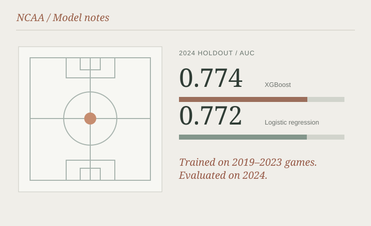

Machine learning · College basketball
NCAA Model Training
Training and evaluating models on past NCAA basketball results to understand which pregame statistics carry useful predictive signal.
- Format
- Machine learning study
- Context
- Personal project
- Tools
- Python, Pandas, Logistic Regression, XGBoost

The question
I'm a big college basketball fan, and I wanted to know how far the numbers alone could take a prediction. Specifically, what can offensive and defensive statistics tell us about who is more likely to win?
I used regular-season NCAA results from 2019 through 2024 and tried two approaches: logistic regression as a simpler baseline, and XGBoost as a more flexible model.
Building the features
The raw box scores aren't the final inputs. I prepared pregame features around the difference between two teams' efficiency and playing styles: offensive and defensive ratings, shooting percentages, turnovers, rebounding, and home-court advantage.
I kept the evaluation chronological. Seasons 2019 to 2023 provided training data, and 2024 was held out for testing, rather than mixing the same season between train and test.
How it performed
Neither model was a magic answer. On the 2024 holdout, both reached an ROC AUC around 0.77, with XGBoost slightly ahead. I also checked Brier score and log loss because the probability itself matters, not just which team gets picked.
Values are rounded from the project evaluation. An AUC of 0.77 is not a claim of 77% game-picking accuracy.
What came out of it
Beyond model evaluation, I exported feature weights and model inputs so a second application could use the same feature definitions to make predictions with current team statistics.
That became the live game predictor. The split between the two projects was useful: one part measures how well the model works, and the other part handles the application logic required to use it.
Explore the source
The repository contains the code, project documentation and technical details.